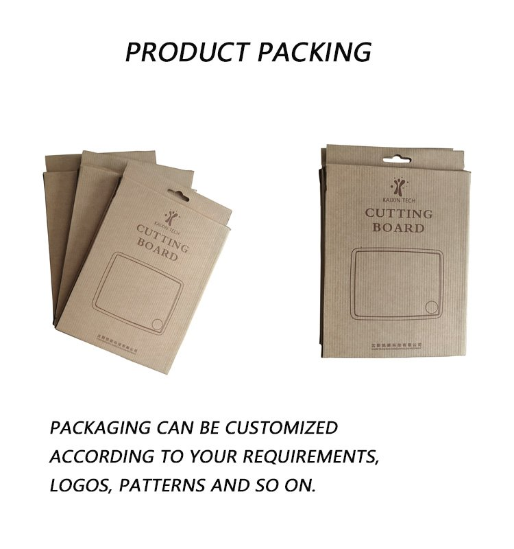

We press plant-fiber tableware in Shenyang and put your brand on it — your color, your logo, your packaging, and when the shape does not exist yet, your mold. This page explains exactly what is adjustable, what it costs in time, and what we need from you before we can quote.

Buyers use the two words interchangeably. Suppliers do not, and the difference decides who pays for tooling.
You already know the shape, or you are specifying color, logo and packaging on an existing mold. We quote per unit, you approve a sample, we run it. Tooling is usually zero because the shape exists. This is the faster and cheaper route, and it covers most private-label tableware programs.
The item does not exist in our range, or the dimensions have to change to fit your market — a deeper well, a different rim, a stack height that matches your shelf. That means a new mold: drawing, tooling, trial press, sample approval. Mold and sampling fees depend on the part, so they are quoted, not listed.
Every line below is a decision you make before the order, not a service we upsell after it.
| Variable | Options | Minimum |
|---|---|---|
| Color | Matched to a Pantone code, or to a physical sample you send. Stock natural rice-husk color needs no minimum beyond the item MOQ. | 500 pcs per color per size on boards; 1,000 pcs on cups; quoted per SKU elsewhere |
| Logo | Molded into the piece during pressing, or printed on the surface. Both are one-color-per-run as standard; multi-color printing is quoted. | 1,000 pcs per design, either method |
| Shape & size | Existing molds as listed on the product pages, or a new mold developed to your drawing (ODM). | New tooling quoted per part |
| Packaging | Plain export carton, printed carton, individual box, sleeve, insert card, barcode and market-specific labeling. | Follows the item MOQ |
| Finish | Standard pressed finish with sanded rim, or a smoother food-contact surface where the shape allows. | Quoted per SKU |
| Set composition | Multi-piece sets (plate + bowl + cup) packed as one retail unit, with a shared colorway. | Quoted per set |
Two logo methods, same 1,000 pcs floor. Molded-in logos are part of the surface and cannot wear off, which suits items washed every day. Printed logos give you finer detail and more than one color, which suits gift and retail packaging. We will tell you which one the shape can actually take.
Screen printing lays the ink on the surface; molding forms the mark into the piece itself. Both videos are shot on the production floor, not in a studio.
| Step | What happens | Who does it | Timing |
|---|---|---|---|
| 1 | You send item, quantity, destination country and artwork | You | Day 0 |
| 2 | We confirm feasibility, MOQ, unit price, tooling if needed, and the document list for your market | Us | 1–3 working days |
| 3 | Color sample and logo sample produced and photographed, or shipped | Us | 2–3 weeks |
| 4 | You approve the sample in writing; deposit issued | You | — |
| 5 | Production, in-line checks, final inspection (yours, ours, or a third party) | Both | 30–45 days |
| 6 | Export cartons, pallet plan, loading photos, shipping documents | Us | Before vessel departure |
Step 3 is where most programs lose a month. If you send a Pantone number that has never been pressed in plant fiber, the first press will read differently from the chip — plant fiber has its own base tone and it shifts warm. We press a trial before the sample run so the sample you approve is the color you will receive, not a photograph of a wish.

Not a claim of local offices. These are the destinations our orders have actually gone to, which is the useful part: we already know what each one asks for at the border and in the buyer's inbox.
| Item | What you receive |
|---|---|
| SGS food-contact test report | Full report with sample description, standard and date — sent with any quotation. |
| LFGB, REACH and MSDS | On file and supplied for EU-bound orders, together with the BPA-free and melamine-free declaration. |
| ISO 14001 | Certificate held for the plant's environmental management system. |
| Testing to your market standard | Samples sent to a third-party lab you nominate; cost and lead time quoted before you commit. |
| Third-party inspection | Your team or an agency you appoint, at any stage. Records and loading photos provided. |
| Custom color and logo claims | Confirmed in writing against your Pantone code and artwork before the deposit, not after. |
This matters more than it sounds. A supplier who answers yes to every standard is telling you they do not read the standard. Read our quality and testing page for how to verify a food-contact report before you accept one — from us or anyone else.
| Question | Answer |
|---|---|
| Minimum for a custom color? | Chopping boards 500 pcs per color per size; cups and tumblers 1,000 pcs. Plates, bowls and trays quoted per SKU, usually 500–1,000 pcs. |
| Sample lead time? | 2–3 weeks for colored samples after the Pantone code and artwork are confirmed. A new mold adds tooling time, quoted from the drawing. |
| Logo methods? | Molded during pressing, or printed on the surface. Both from 1,000 pcs per design. |
| Can you test to our market's standard? | Yes. SGS, LFGB, REACH, MSDS and the BPA-free and melamine-free declarations are on file. For anything else we send samples to a lab you nominate and quote it first. |
| Production lead time? | 30–45 days after sample approval and deposit. Peak-season orders should be placed 2–3 months ahead. |
| Can we mix items in one container? | Yes, and most distributors do. Mixed loading is planned at quotation so the pallet plan is known before production starts. |
Item, quantity, destination, Pantone code, artwork. That is enough for a written quotation with lead time and the document list for your market.